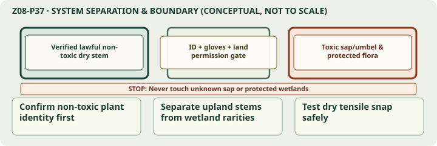

Z08-P37 · Rocks, minerals and materials · New manuscript
Herbaceous Stem, Rush and Sedge Fiber Selection Limits
Screen common Upper Midwest fibrous plant stems while avoiding toxic lookalikes, dermal irritants, and protected habitats.
When it applies · Educational fiber recognition in upland meadows and lawful private land.
Equipment · Gloves, plant identification guide, land-permission check.

Actions
- Verify positive non-toxic plant identity before handling wild stems because poison ivy vines, stinging nettle hairs, wild parsnip sap, and hemlocks cause severe burns or poisoning.[R18, B12, B14]
- Avoid harvesting wetland sedges, rushes, or prairie natives on public lands, SNAs, or protected shorelines where vegetation removal is illegal.[R09, R10, R18]
- Recognize that dry brittle stems crack unless conditioned properly, and never use improvised plant twine for climbing, hoisting, or life-safety anchors.[R18, K04]
Failure recognition · Grabbing wild parsnip or poison ivy stems barehanded causes blistering dermatitis, while weak grass twine snaps under sudden load.[R18, B12, B14]
Verify · Plant identity is confirmed non-toxic, land permission is verified, and fibers are restricted to light non-safety demonstration.[R18, B12]
Stop or change course · Stop handling any unidentified stem, milky sap plant, hollow-stemmed umbel, or protected native plant community.[R10, R18, B11]
Evidence and editorial notes
- B11 · USDA ARS · Poisonous Plant Research Laboratory Reference (Current web edition)
- Section: Water hemlock (Cicuta) and poison hemlock (Conium) lethality · Conditions: Wetlands, ditches, and disturbed ground with Apiaceae (carrot-family) umbels
Support: Water hemlock (Cicuta maculata) and poison hemlock (Conium maculatum) contain potent neurotoxins causing rapid seizures, respiratory arrest, and death even from small bites.
Limitations: Never forage wild carrot-family roots or foliage without independent qualified botanical verification; reject any wet-ground umbel outright. · Conflicting evidence: None noted.
Editorial note: Mandatory Z05 lethal Apiaceae stop rule. · Specialist reviewer: Botanist and medical toxicologist
Primary source · checked 2026-11-25 - B12 · NIOSH / CDC · Poisonous Plants: Hemlock, Dermatitis, and Field Hazards (Current web edition)
- Section: Toxic plant dermatitis and hemlock contact/ingestion hazards · Conditions: Field work around poison ivy, poison sumac, wild parsnip, and hemlocks
Support: Urushiol oils in Toxicodendron species cause severe allergic contact dermatitis; burning vines aerosolizes toxic smoke that damages lungs.
Limitations: Never burn unknown vines or brush piles; wash exposed skin promptly with cool water and soap. · Conflicting evidence: None noted.
Editorial note: Covers Z05 contact/inhalation plant hazards. · Specialist reviewer: Occupational health and botanist
Primary source · checked 2026-11-25 - B14 · University of Minnesota Extension · Wild Parsnip Identification and Photodermatitis Hazard (Current web edition)
- Section: Wild parsnip (Pastinaca sativa) phytophotodermatitis · Conditions: Sunny roadsides, prairies, and disturbed meadows in Minnesota
Support: Sap from wild parsnip contains furocoumarins that react with sunlight to cause painful chemical burns and blistering.
Limitations: Avoid bare-skin contact with yellow-umbel roadside stems; wash sap immediately and shield exposed skin from sunlight. · Conflicting evidence: None noted.
Editorial note: Specific Minnesota photodermatitis lookalike warning. · Specialist reviewer: UMN Extension botanist
Primary source · checked 2026-11-25 - K04 · USDA Forest Service · Handtools for Trail Work (0523-2810-MTDC) (agency handbook)
- Section: Sharpening, Filing and Handle Maintenance · Conditions: Maintaining cutting edges and wood tool handles in field or shop
Support: Secure the tool firmly before filing or honing, keep fingers behind file guards, preserve factory bevel geometry without overheating steel and replace loose or cracked handles rather than taping them.
Limitations: Field touch-up honing does not correct chipped, cracked or heat-annealed steel blades. · Conflicting evidence: None; separates routine edge maintenance from unsafe handle patching.
Editorial note: Guides sharpening, rust prevention and handle-failure retirement cards. · Specialist reviewer: Tool maintenance and forestry safety
Primary source · checked 2026-11-24 - R09 · Minnesota DNR · Minnesota State Park Rules and Resource Collecting Restrictions (Current web edition)
- Section: State park natural-feature protection · Conditions: Minnesota State Parks and Recreation Areas
Support: Removing rocks, minerals, soil, or live vegetation from Minnesota State Parks is prohibited to protect natural resources.
Limitations: Verify jurisdiction boundaries before picking up specimens even along shorelines or trails. · Conflicting evidence: None noted.
Editorial note: Bounds state-park material collection. · Specialist reviewer: Minnesota DNR resource manager
Primary source · checked 2026-11-25 - R10 · Minnesota DNR · Scientific and Natural Areas Visitor Rules and Prohibitions (Current web edition)
- Section: Scientific and Natural Areas strict preservation rules · Conditions: Minnesota Scientific and Natural Areas (SNAs)
Support: SNAs prohibit collecting any plants, rocks, minerals, wood, or natural materials and restrict off-trail disturbance.
Limitations: Check boundary signs and maps before fieldwork. · Conflicting evidence: None noted.
Editorial note: Enforces SNA zero-collection boundaries. · Specialist reviewer: Minnesota DNR SNA manager
Primary source · checked 2026-11-25 - R18 · Minnesota DNR · Minnesota Native Plant Communities and Biomes (Current web edition)
- Section: Natural plant fiber harvest limits and conservation ethics · Conditions: Bast fibers, rushes, sedges, and woody stems in regional biomes
Support: Harvesting fibrous plants without landowner permission or in protected native plant communities damages ecosystems and may violate law.
Limitations: Strength of hand-twisted plant cordage varies sharply with retting, moisture, and knots; never assign life-safety loads. · Conflicting evidence: None noted.
Editorial note: Connects Z08 fibers to Z09 load limits and law. · Specialist reviewer: Botanist and materials specialist
Primary source · checked 2026-11-25
Source lineage · New manuscript (Z08 P16 natural fibers) · Classification · New manuscript.